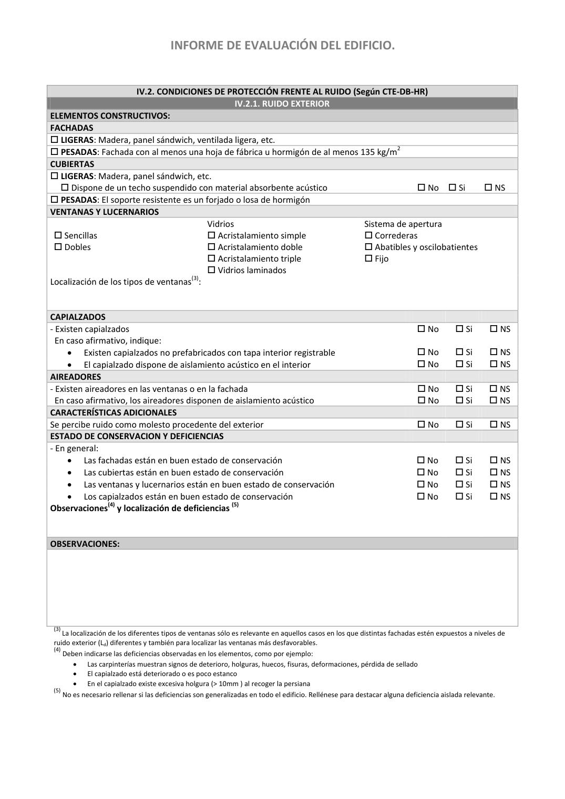

<!doctype html>
<html lang="es"><head><meta charset="utf-8">
<meta name="viewport" content="width=device-width, initial-scale=1">
<title>GUIA · p. 43 — Página 43</title><link rel="stylesheet" href="../estilo.css">
</head><body>
<nav><a href="../index.html">Índice</a> › <a href="../doc/guia-pdf-a5d4ef5252ba-2016-11-01-813669d3066c.html">GUIA</a> › p. 43</nav>

<header class="meta">
<p><strong>GUIA</strong> · Página 43 · versión 2016-11-01</p>
<p>SHA256: <code>813669d3066c0ff79457d57b80b0512a4fbb248bc5db1f7baf473c369a064738</code> · página física 43 de 65 · métodos de encabezado
solo si están cotejados.</p>
<p><a href="../doc/guia-pdf-a5d4ef5252ba-2016-11-01-813669d3066c.html">Documento</a> · <a href="guia-pdf-a5d4ef5252ba-2016-11-01-813669d3066c__p0042.html">← p. 42</a> · <a href="guia-pdf-a5d4ef5252ba-2016-11-01-813669d3066c__p0044.html">p. 44 →</a></p>
<p>Formatos: <a href="../../contenido/docs/GUIA-PDF-a5d4ef5252ba/2016-11-01__813669d3066c/pagina/p0043.md">Markdown</a> · <a href="../../contenido/docs/GUIA-PDF-a5d4ef5252ba/2016-11-01__813669d3066c/bloque/p0043.json">JSON de bloques</a> · <a href="../../contenido/docs/GUIA-PDF-a5d4ef5252ba/2016-11-01__813669d3066c/fuente.pdf#page=43">PDF p. 43</a> · <a href="../../contenido/docs/GUIA-PDF-a5d4ef5252ba/2016-11-01__813669d3066c/figura/p0043.png">imagen PNG</a></p>
</header>
<nav class="paginas"><a href="../doc/guia-pdf-a5d4ef5252ba-2016-11-01-813669d3066c.html">Documento</a> <a href="guia-pdf-a5d4ef5252ba-2016-11-01-813669d3066c__p0042.html">← p. 42</a> <a href="guia-pdf-a5d4ef5252ba-2016-11-01-813669d3066c__p0044.html">p. 44 →</a></nav>
<h2>Encabezado de la página</h2><ul><li>Sin encabezado de fuente cotejada en esta página.</li></ul>

<pre class="literal">INFORME DE EVALUACIÓN DEL EDIFICIO. 
 
 
IV.2. CONDICIONES DE PROTECCIÓN FRENTE AL RUIDO (Según CTE-DB-HR) 
IV.2.1. RUIDO EXTERIOR 
ELEMENTOS CONSTRUCTIVOS:
FACHADAS 
 LIGERAS: Madera, panel sándwich, ventilada ligera, etc. 
 PESADAS: Fachada con al menos una hoja de fábrica u hormigón de al menos 135 kg/m2 
CUBIERTAS 
 LIGERAS: Madera, panel sándwich, etc. 
 Dispone de un techo suspendido con material absorbente acústico 
 No  Si 
 NS 
 PESADAS: El soporte resistente es un forjado o losa de hormigón 
VENTANAS Y LUCERNARIOS 
 
 Sencillas 
 Dobles 
Vidrios 
 Acristalamiento simple 
 Acristalamiento doble 
 Acristalamiento triple 
 Vidrios laminados 
Sistema de apertura 
 Correderas 
 Abatibles y oscilobatientes 
 Fijo 
 
Localización de los tipos de ventanas(3): 
 
 
CAPIALZADOS 
 
 
 
- Existen capialzados 
 No 
 Si 
 NS 
  En caso afirmativo, indique: 
 
 
 
• 
Existen capialzados no prefabricados con tapa interior registrable 
 No 
 Si 
 NS 
• 
El capialzado dispone de aislamiento acústico en el interior 
 No 
 Si 
 NS 
AIREADORES 
 
 
 
- Existen aireadores en las ventanas o en la fachada 
 No 
 Si 
 NS 
  En caso afirmativo, los aireadores disponen de aislamiento acústico 
 No 
 Si 
 NS 
CARACTERÍSTICAS ADICIONALES 
 
 
 
Se percibe ruido como molesto procedente del exterior 
 No 
 Si 
 NS 
ESTADO DE CONSERVACION Y DEFICIENCIAS 
 
 
 
- En general:  
 
 
 
• 
Las fachadas están en buen estado de conservación 
 No 
 Si 
 NS 
• 
Las cubiertas están en buen estado de conservación 
 No 
 Si 
 NS 
• 
Las ventanas y lucernarios están en buen estado de conservación 
 No 
 Si 
 NS 
• 
Los capialzados están en buen estado de conservación 
 No 
 Si 
 NS 
Observaciones(4) y localización de deficiencias (5) 
 
 
 
 
 
 
 
 
OBSERVACIONES:
 
 
 
 
 
(3) La localización de los diferentes tipos de ventanas sólo es relevante en aquellos casos en los que distintas fachadas estén expuestos a niveles de 
ruido exterior (Ld) diferentes y también para localizar las ventanas más desfavorables. 
(4) Deben indicarse las deficiencias observadas en los elementos, como por ejemplo: 
• 
Las carpinterías muestran signos de deterioro, holguras, huecos, fisuras, deformaciones, pérdida de sellado 
• 
El capialzado está deteriorado o es poco estanco 
• 
En el capialzado existe excesiva holgura (&gt; 10mm ) al recoger la persiana 
(5) No es necesario rellenar si las deficiencias son generalizadas en todo el edificio. Rellénese para destacar alguna deficiencia aislada relevante. 
 
 
 
</pre>
<figure><a href="../../contenido/docs/GUIA-PDF-a5d4ef5252ba/2016-11-01__813669d3066c/figura/p0043.png"></a><figcaption>Imagen de la página 43 (PNG ya extraído; prevalece sobre fórmulas).</figcaption></figure>
<h2>Tablas candidatas de esta página</h2><ul><li><a href="../../contenido/docs/GUIA-PDF-a5d4ef5252ba/2016-11-01__813669d3066c/tabla/p0043_t01.json">p0043_t01.json</a> · <a href="../../contenido/docs/GUIA-PDF-a5d4ef5252ba/2016-11-01__813669d3066c/tabla/p0043_t01.csv">.csv</a> (22 × 6; candidata, no reconstruida aquí)</li></ul>
<h2>Referencias, notas y excepciones (página y vecinas)</h2><ul><li><a href="../apartado/guia-pdf-a5d4ef5252ba-2016-11-01-813669d3066c__a0031.html">ID a0031 · PARTE IV: CONDICIONES BÁSICAS DE PROTECCIÓN FRENTE AL RUIDO USO RESIDENCIAL VIVIENDA:</a></li></ul>
<h2>Apartados que incluyen esta página</h2><ul><li><a href="../apartado/guia-pdf-a5d4ef5252ba-2016-11-01-813669d3066c__a0031.html">ID a0031 · PARTE IV: CONDICIONES BÁSICAS DE PROTECCIÓN FRENTE AL RUIDO USO RESIDENCIAL VIVIENDA:</a></li></ul>

<footer>Generado estáticamente desde JSON normalizado; sin JavaScript ni servicios externos.
El JSON es la fuente; este HTML es caché reproducible.</footer>
</body></html>
